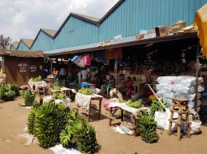

About Taste of Africa
Our mission is to celebrate and protect African food heritage, and to make these recipes easy for everyone to cook, share and enjoy.
Our mission
Food carries memory. Every recipe on this site is a doorway into a community, a landscape and a family table. We want more people to cook, taste and learn about African ingredients and the people who keep these traditions alive.
A short history of African cuisine
African cooking grew from indigenous crops such as millet, sorghum, yam and teff. Trade across the Sahara and the Indian Ocean brought new spices and techniques, and crops from the Americas, including tomatoes, chillies, maize and cassava, became everyday ingredients.
Today African dishes travel with people. Jollof rice, injera and bunny chow are cooked in kitchens and restaurants around the world, and African flavors continue to shape global food.

Visit a food landmark
Kimironko Market in Kigali, Rwanda, is a lively place to see fresh produce and local ingredients.